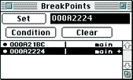

Figure 1: BreakPoints window
Table 1: Working with the Breakpoints window.
------------------------------------------------------
To... |Do this...
------------------------------------------------------
Open the window |Press Command-U, or select
|BreakPoints from the View menu.
------------------------------------------------------
Set a breakpoint|Enter the breakpoint address or a
|function name into the edit box to
|the right of the Set button, then
|click Set. The source line or
|disassembly line is marked with a
|bullet ().
------------------------------------------------------
Remove a |Click on a breakpoint in the list to
breakpoint |select it, then click Clear. The
|bullet in the left margin of the
|Source or Disassembly window is
|replaced with a pound sign (#).
------------------------------------------------------
Set conditional |Click on the Condition box.See Using
breakpoints |conditional breakpoints from the
|Source window.
------------------------------------------------------
Note: You can place hard-coded breakpoints into the source code if you include debug.h in that file. Putting a Debugger(); statement anywhere in the code will then cause a breakpoint. Use Ignore Software Breakpoints in the Preferences dialog if you want to run your program without stopping at these breakpoints.